| |
|
PLAN ÇİZİM MODLARI (.lil)
|
|
.lil Dosyalarının Formatı
Boyuna Çizgiler Şev Taramaları Kodlara Göre Taramalar Duvarlar ve Kenar Hendekler Sanat Yapıları Yüzey, Kod ve Tip Kesite Göre Çizgiler Eğime Göre Çizgiler ve Eğimler Şevlerin Etiketlenmesi Geopak Yarma/Dolgu Alanları Eşyükselti Eğrileri Traversler ve Raylar Enine Çizgiler Şev Alanları Sınırlar Rögarlar, Borular ve Dirsekler Metin Tabloları Sembollere Göre Çizgiler Sembollere Göre Semboller Yüzey ve Koda Göre Alanlar Dolgu Konileri Kazıma (Frezaj) ve Söküm Bordürler, Tabliyeler Üstyapı Katmanları Eğim Değişimleri  Bu menü aracılığıyla .lil plan çizim dosyalarını interaktif olarak düzenleyebiliriz. Diyalog kutusuna girildiğinde, mevcut çizim modu (ISPOL.lil) otomatik olarak yüklenir ve değişiklikler mevcut eksen üzerinde yeniden çizilir. Eğer eksen çok ağırsa, düzenleme başka bir eksen kullanılarak veya Oto seçeneği devre dışı bırakılarak yapılabilir, böylece yeniden çizimler kullanıcının isteği üzerine gerçekleştirilir. Yaptığımız değişikliklerle .lil dosyalarını yükleyebilir veya kaydedebilir, ayrıca düzenlenmiş dosyayı ikinci veya üçüncü kütüphaneye kaydedebiliriz. Bu diyalog kutusunda, herhangi bir varlığın tanımlandığı alt menülerde "tik" işaretleri görünecektir. Genel Bilgiler Plan çizim modları, farklı elemanlar için seçilen 3B çizgi gösterim türünü yansıtır. Kütüphanede mevcut olan birçok modun adları, çizdikleri elemanları tanımlamaya yardımcı olan harf kombinasyonları kullanır:
Örneğin, LBT.lil modu, platformun boyuna çizgilerini, proje sınırlarını ve enkesitleri çizmeyi emreder. Belirli renkler ve modlar, dosya içindeki komut satırlarında ve .lil ÇİZİM MODLARI DÜZENLEYİCİSİ'nde açıklanmıştır. Şev taraması için P koduna birkaç ‘uzantı’ mevcuttur; P11 programa ‘çizgileri’ banket kenarından çizmesini emreder ve P5 aynısını palye kenarından (kod 50) yapar. Aşağıda, ISTRAM®/ISPOL®'un varsayılan olarak \ispol\lib dizininde sunduğu farklı .lil dosyalarını uygulayarak oluşturulan sonucun bazı basit grafik örnekleri gösterilmektedir.
.lil Çizim Modu Dosyalarının Açıklaması .lil Dosyalarının Formatı
Varsayılan olarak bu dosyalar, temel veya birincil kütüphanede mevcut olan çizgileri kullanır ve bu nedenle, eğer bu kütüphane değiştirilmişse, sonuçlar veya çizimlerin görünümü istenen gibi olmayabilir. Öte yandan, kullanıcının bu dosyaları düzenleyerek veya bunlardan yeni dosyalar oluşturarak kütüphaneyi zenginleştirmesi önerilir. Aşağıda, kullanıcının bu tür dosyaları anlamaya başlaması için basit bir çizim modu (LBT.lil) açıklanmaktadır: ######################################################################
# LBT.lil, L çizgilerini, T çizgilerini ve işgalleri çizer # ###################################################################### # KODLARA GÖRE L ÇİZGİLERİNİN ÇİZİM KOMUTLARI # # L tipi koda kadar elemanlar # # --- --------- ---------------- ------------------------------ # T 39 -50. refüj tabanı # T 81 -10. refüj palyeleri ve yardımcıları # T 31 10. ana platformlar # T 81 110. dış palyeler ve banketler # T 82 1000. dolgu # T 39 1200. hendek # T 43 2000. yarma # T 69 3000. zayıf zemin yarması # ###################################################################### # İŞGAL VE KAMULAŞTIRMA ÇİZGİLERİNİN ÇİZİM KOMUTU # # L tipi elemanlar # # --- --------- ---------------- ------------------------------ # B 65 ulaşılan alanlar # # E 74 kamulaştırma alanı # ###################################################################### # ENKESİT ÇİZGİLERİNİN ÇİZİM KOMUTU # # L tipi elemanlar # # --- --------- ---------------- ------------------------------ # R 61 enkesit çizgileri # ###################################################################### # TARAMALAR İÇİN ÇİZİM KOMUTU # # L tipi mes(mm) iptal 1 uzun, her n'de # # --- --------- -------- ------- ------------------------------ # # P 0 5. 1. 2 # ###################################################################### # AYRI KENAR HENDEKLERİ İÇİN ETİKETLEME TANIMI # # L tipi # # --- --------- # # GL 50 Boyuna Çizgiler # # GT 50 Enine Çizgiler # # L tipleri # # --- ---------- # GL2 50 168 Boyuna Çizgiler (Dolg,Yarm) # GT2 50 168 Enine Çizgiler (Dolg,Yarm) # ###################################################################### # DUVARLAR İÇİN ETİKETLEME TANIMI # # L tipi # # --- --------- # ML 150 Boyuna Çizgiler # MT 150 Enine Çizgiler # ###################################################################### # son # # --- # SON # ###################################################################### İlk sütun çizim komutudur. Böylece, T komutu boyuna çizgiler çizmeyi sağlar. Örnekte, -50'ye kadar olan tüm benzer kodlar (bu, kod -100 olan refüj tabanını içerir) L39 çizgi tipiyle birleştirilecektir. -50 (iç palye kenarı) ile -10 arasındaki tüm olası kodlar, L81 çizgi tipiyle temsil edilecektir; bu, palye kenarlarını ve iç banket çizgisini, ayrıca olası kaldırımları veya iç sabit platformları içerir. Aynı işlem, 3000'e kadar olan farklı kod aralıklarıyla yapılır. Bu çizgilerden herhangi birinin gösterimini engellemek için, ilgili koda -1 çizgi tipi atamak yeterlidir. Dördüncü sütun, program tarafından okunmaz ve yalnızca gelecekteki düzenlemeler için dosyanın daha iyi anlaşılmasına yönelik yorumlar olarak hizmet eder.
Enkesit çizgileri, LT2.lil çizim modunun kullandığı RS komutu aracılığıyla iki belirli kod arasında kısmen de çizilebilir: ...
###################################################################### # ENKESİT ÇİZGİLERİNİN ETİKETLEME TANIMI # # YÜZEY VE KODLARA GÖRE # # L tipi Yüzey Başlangıç Kodu Bitiş Kodu # # --- --------- ---------------- -------------- --------------- # RS 67 67 2. 100. # RS 68 68 100. 5000. # ###################################################################### ... Bu dosyada, 67 enkesit yüzeyinin 2 ve 100 kodları arasındaki kısmı 67 çizgi tipiyle ve 68 enkesit yüzeyinin 100 ve 5000 kodları arasındaki kısmı 68 çizgi tipiyle çizilir. Enkesit çizgileri, LT2.lil çizim modunun kullandığı RS komutu aracılığıyla iki belirli kod arasında kısmen de çizilebilir. Ardından, şev taraması çizimi için P komutu gelir. Bu örnekte satır yorumlu olduğu ve bu nedenle çizilmeyecek olsa da, işleyişi şu şekilde olacaktır:
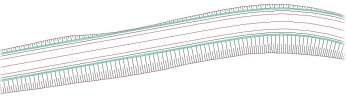
Peine.lil çizim moduyla çizilmiş plan Örnek, ayrıca daha sonra yorumlanan kenar hendekleri ve duvarların gösterimi için bir dizi komutla devam eder. Son olarak, dosya büyük harflerle SON kelimesiyle biter, bu da ondan sonraki herhangi bir komut satırını geçersiz kılar. Eğer aynı türden birkaç komut aynı anda kullanılırsa, okunan son komut kullanılacaktır. Örneğin, aşağıdaki durumda, sadece C5 dikkate alınacaktır: ######################################################################
# KAPALI ALANLAR OLUŞTURMA ETİKETLEME TANIMI # # L tipi Yarm L tipi Dolg # # --- -------------- -------------- # C11 72 71 (banket kenarından c==11) # C 72 71 (terasmandan) # C5 72 71 (Palyeden kod==50) # Ancak doğru olan, # karakterini C11 ve C komut satırlarının başına koymak olacaktır. Aşağıda, kesitin bölgelerine göre uygulamanın sunduğu tüm olanaklar açıklanmakta ve ayrıca demiryolu ve boru hattı projeleri için özel modlar tanımlanmaktadır. Boyuna Çizgiler
######################################################################
# bovedas.lil # ###################################################################### ###################################################################### # HERHANGİ BİR YÜZEYDEN ÇIKARILAN BOYUNA ÇİZGİLER # # L Tipi Yüzey elemanlar # # --- --------- ---------- ------------------------------ # LL 40 11 Destekleme (Karşı kemersiz) # LL 40 7 Destekleme (Karşı kemerli) # LL 0 12 Kaplama (Karşı kemersiz) # LL 0 8 Kaplama (Karşı kemerli) # #--------------------------------------------------------------------# # HERHANGİ BİR YÜZEYDEN ÇIKARILAN ENİNE ÇİZGİLER # # L Tipi Yüzey elemanlar # # --- --------- ---------- ------------------------------ # LT 40 11 Destekleme (Karşı kemersiz) # LT 40 7 Destekleme (Karşı kemerli) # LT 0 12 Kaplama (Karşı kemersiz) # LT 0 8 Kaplama (Karşı kemerli) # ###################################################################### Şev Taramaları
LPM.lil çizim modu, P11 komutunu içerir. Bu, taramayı banket kenarından yapar, böylece hendekler taranmaz. Ayrıca, platformun yanal palyelerinin çizgileri veya terasmanla kesişim de çizilmez. LP2.lil dosyası, dolgu şevlerinin taranmasını kod 2'den (platform kenarı, beyaz şerit) başlatarak gerçekleştiren P2 komutunu içerir. Ayrıca, yarma ve dolgu taramalarını farklı çizgi tipleriyle temsil etmek için PT komutu da görülebilir. Belirli kodlar arasında şev taramasını çizmek için bir örnek olarak, sadece duvarların arka yüzeyinin iki bölgesini taramaya olanak tanıyan PeinaMur.lil dosyası bulunur:  P0: Taramaların parametrelerini tanımlar, ancak PCD veya PCT ile tanımlananlar hariç hepsini iptal eder. PCD ayak_kodu tepe_kodu: İki belirli kod arasında bir yarma taraması tanımlamak için. PCT tepe_kodu ayak_kodu: İki belirli kod arasında bir dolgu taraması tanımlamak için. Ayrıca, sırasıyla dolgu ve yarma için PCTA ve PCDA komutları da mevcuttur ve işleyişleri aşağıdaki örnekle açıklanmaktadır: PCDA 50 600 Yarmada 50 kodundan 600'e kadar tarayacaktır, ancak 50 kodunu bulamazsa, önceki noktadan (örneğin, 11 kodu olabilir) başlayacaktır. PI komutu, şev taraması ve boyuna çizgiler L'nin çizimi için yetkin zeminden zayıf zemine yarma değişim çizgisini atlar. Bu komut, zayıf zeminde yarma tanımının etkinleştirildiği kesitlerde çalışır. Bu komut, Peine_b.lil dosyasında bulunur: ######################################################################
# TARAMALAR İÇİN ETİKETLEME TANIMI # # L tipi yarma L tipi dolgu # # --- --------------- ---------------- # PT 43 40 # # YETKİN/ZAYIF ZEMİN NOKTASINI TARAMALAR VE L Çizgileri İÇİN ATLA # # # # --- # PI # # L tipi mes(mm) iptal 1 uzun, her n'de # # --- --------- -------- ------- ------------------------------ # P5 0 1. 1. 2 (Palyeden kod==50) # ######################################################################
PA veya CA komutu, 100, 50, 11, 2 kodlarını arayarak taramanın başını otomatik olarak belirler. Profilde bulunan ve ayrıca .lil dosyasında çizimi devre dışı bırakılmamış olan ilkini dikkate alır. PeineA.lil dosyasında, 100 kodlu çizginin (terasman drenajı) çizimi devre dışı bırakılmıştır, bu nedenle tarama palye (50), banket kenarı (11) veya platform kenarı (2) çizgisinden başlayacaktır. ######################################################################
# TARAMALAR İÇİN ETİKETLEME TANIMI # # L tipi yarma L tipi dolgu # # --- --------------- ---------------- # PT 43 40 # # L tipi mes(mm) iptal 1 uzun, her n'de # # --- --------- -------- ------- ------------------------------ # PA 0 1. 1. 2 (Otomatik) # ###################################################################### Demiryolları için özel bir çizim modu olan LPbalast.lil dosyası, balast (kod 11-12) ve koruyucu tabaka (13-100 veya 50-100) şevlerini taramaya olanak tanıyan bir tarama komutu, PB, içerir: ######################################################################
# TARAMALAR İÇİN ETİKETLEME TANIMI # # L tipi mes(mm) iptal 1 uzun, her n'de # --- --------- -------- ------- ------------------------------ # PB 0 5. 1. 2 # ###################################################################### 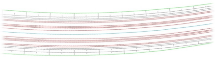
LPBalast.lil çizim moduyla çizilmiş plan  Sembollerle tara: Şev taramalarını ölçeklenebilir sembollerle
değiştirmek için, 1 uzun, her n'de verisi -1 değeriyle değiştirilir. LPmuelle.lil modu, S89 sembolünü kullanır: Hendekleri tara:
Hendek taraması için de, LP50CUN.lil'de kullanılan özel bir komut, PC50, mevcuttur:
Sembollerle tara: Şev taramalarını ölçeklenebilir sembollerle
değiştirmek için, 1 uzun, her n'de verisi -1 değeriyle değiştirilir. LPmuelle.lil modu, S89 sembolünü kullanır: Hendekleri tara:
Hendek taraması için de, LP50CUN.lil'de kullanılan özel bir komut, PC50, mevcuttur:PF (üstyapı taraması) komutu, üstyapı şevini 50 ve 100 kodları arasında tarar ve ardından dolgu ve/veya yarma şevini tarar. PF.lil dosyası bu komutu içerir: ######################################################################
# TARAMALAR İÇİN ETİKETLEME TANIMI # # L tipi yarma L tipi dolgu # # --- --------------- ---------------- # PT 43 40 # # L tipi mes(mm) iptal 1 uzun, her n'de # # --- --------- -------- ------- ------------------------------ # PF 0 1. 1. 2 (Palyeden kod==50) # ###################################################################### zanja.lil dosyası, şevleri hendek tabanına kadar taramaya olanak tanır: ######################################################################
# Hendek : Şevleri hendek tabanına kadar tarama # ###################################################################### # KODLARA GÖRE L ÇİZGİLERİNİN ETİKETLEME TANIMI # # L tipi koda kadar elemanlar # # --- --------- ---------------- ------------------------------ # T 43 -100. # T 43 110. Hendek # T 82 1000. dolgu # T 39 1200. hendek # T 43 2000. yarma # T 69 3000. zayıf zemin yarması # TZ Hendek Tipi: Tüm 68'i takip eder, 67'yi değil # ###################################################################### # TARAMALAR İÇİN ETİKETLEME TANIMI # # L tipi yarma L tipi dolgu # # --- --------------- ---------------- # PT 43 40 # # L tipi mes(mm) iptal 1 uzun, her n'de # # --- --------- -------- ------- ------------------------------ # P1 0 1. 0.1 2 (kod==100'den) # ###################################################################### # son # # --- # SON # ###################################################################### LPqatar.lil gibi bir sembol kullanarak şev taraması yapabiliriz; bir uzun ve bir kısa sembol çizerek veya bir uzun ve iki kısa sembol çizerek...
Yarma duvarı kazısını tara: 1282-1283 kodları arasındaki yüzeyi (149) tarar.Kodlara göre tarama kullanmaya gerek yoktur. 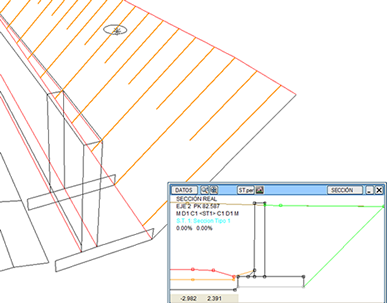
Platform kenarına dik taramalar: platform genişliği geçişlerinde.Kodlara Göre Taramalar
Duvarlar ve Kenar Hendekler
Aynı lp5m.lil dosyasında, platformdaki palye kenarları ile banket kenarlarının çizgi tiplerini ayıran ve diğer .lil dosyalarında karışık gelen kesitin boyuna çizgileri için bir tanım bulunur. İlgili kodları ekleyerek daha fazla tip ayırmak mümkündür: ######################################################################
# KODLARA GÖRE L ÇİZGİLERİNİN ETİKETLEME TANIMI # # L tipi koda kadar elemanlar # # --- --------- ---------------- ------------------------------ # T 39 -51. refüj tabanı # T 33 -12 refüj palyeleri # T 81 -10. refüj yardımcıları # T 31 10. ana platformlar # T 81 15. dış banketler # T 33 110. dış palyeler # T 82 1000. dolgu # T 39 1200. hendek # T 43 2000. yarma # T 69 3000. zayıf zemin yarması # ###################################################################### Ayrı bir çizgi tipinde tanımlandığında kenar hendeklerinin boyuna ve enine çizgilerini çizmek için iki komut bulunur. Kütüphanede, bu komutları (GL, GT, GL2 ve GT2) içeren LTG.lil dosyası bulunur: ######################################################################
# AYRI KENAR HENDEKLERİ İÇİN ETİKETLEME TANIMI # # L tipi # # --- --------- # # GL 50 Boyuna Çizgiler # # GT 50 Enine Çizgiler # # L tipleri # # --- ---------- # GL2 50 168 Boyuna Çizgiler (Dolg,Yarm) # GT2 50 168 Enine Çizgiler (Dolg,Yarm) # ###################################################################### GL ve GT komutları (yorumlu oldukları ve bu nedenle kullanılmayacakları), hendekleri 50 çizgi tipiyle çizer ve GL2 ve GT2'den farkı, bunların dolgu ve yarma kenar hendeklerini çizmek için iki farklı tip tanımlamaya olanak tanımasıdır (50 ve 168). Sanat Yapıları
derrame2.lil çizim modu, öncekinden farklı olarak sanat yapısı ve tünel alanlarını doldurur ve derrame3.lil dosyası ayrıca, her bir orta ayağın adını, KM'sini, uzunluğunu ve çizim KM'sini etiketlemeyi ekler; tüm bu veriler SANAT YAPILARI menüsünde tanımlanır. Bunun için sırasıyla EST_N, EST_PK, EST_L ve EST_PILA komutları kullanılır: 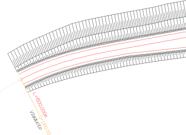
Derrame3.lil çizim moduyla çizilmiş plan derrame4.lil çizim modu, öncekinden çok benzerdir, ancak N5 yerine NT5 komutunu kullanır, bu da dolgu konilerinin hem sanat yapıları hem de tünel portalları için oluşturulduğunu gösterir. Taramaların çizimi için, yarma ve dolgu taramaları için tanımlanan aynı tipleri kullanmaya olanak tanır. Bu çizim modu, bovedas.lil modunun yaptığına benzer şekilde, tünellere karşılık gelen boyuna ve enine çizgileri de çizer. 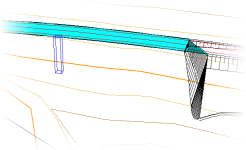 derrame4.lil çizim modu başka özellikler de sunar: dolgu dış kaplama şevleri boyunca boyuna çizgiler ve taramalar çizmeyi sağlayan TR komutunun kullanımı (bu yüzeyin tanımlandığı bölgelerde) ve boyutları SANAT YAPILARI menüsünde beyan edildiği sürece orta ayakların 3B tel modelini çizen EST_P3D komutunun kullanımı. Yüzey, Kod ve Tip Kesite Göre Çizgiler Bu menüyü kullanarak, herhangi bir yüzey ve koddan boyuna çizgiler çizebiliriz. Çizilecek çoklu çizginin tarafı, sağ, sol veya her ikisi'ni seçerek koda göre ayrıştırılabilir. KM sütunundaki kutucuk işaretlenerek, her bir çizginin başlangıç ve bitiş KM'si etiketlenebilir. Bölge sütununda, her zaman mı yoksa sadece yarma veya dolgu bölgelerinde mi çizileceğini seçebiliriz. Kesit sütununda, her çizgiyi tipine göre işaretleyebiliriz: C, D veya T. Örnek olarak kütüphanemizde Cuneta_ST.lil dosyası bulunmaktadır.  Cuneta_ST.lil dosyası, hendek tabanını (LCST komutu) çizmek için her bir hendek tip kesitine farklı bir çizgi tipi atamaya olanak tanır: 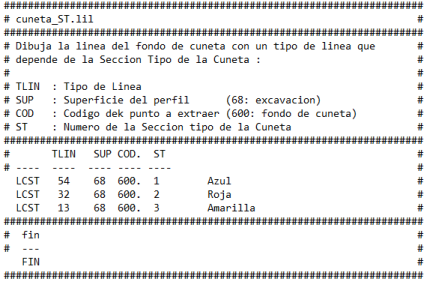
Kullanıcı Km'si kutucuğu etkinleştirilirse, KM Denklemlerinden türetilen KM'leri kullanır. Eğime Göre Çizgiler ve Eğimler
Hendek çizgilerini (hendek tabanı veya kesitin herhangi bir karakteristik çizgisi), eğime bağlı olarak çizgi tipini değiştirerek ve suyun akış yönüne bağlı olarak yönlendirerek çizebiliriz. Ayrıca, yüksek noktaları bir sembolle ve alçak noktaları başka bir sembolle işaretler: 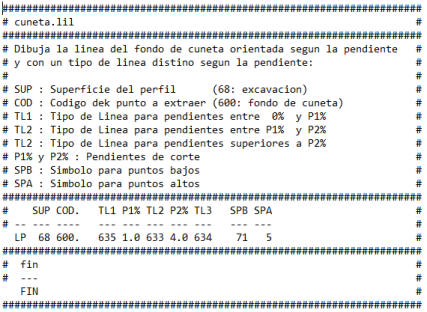
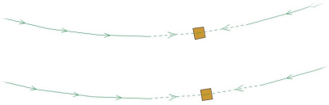
cuneta_s.lil modu, cuneta.lil'e benzer, ancak hendeğin konumunu belirlemek için profil sembollerini kullanır. Aynı şekilde, eğime bağlı olarak üç farklı çizgi tipi oluşturur ve suyun akış yönüne göre yönlendirilir. Ayrıca, yüksek ve alçak noktaları farklı sembollerle işaretlemeye olanak tanır: Şevlerin Etiketlenmesi
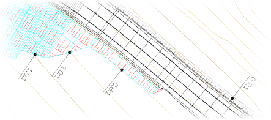
Geopak
Yarma/Dolgu Alanları 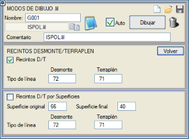
YARMA ve DOLGU şevleri, taramalar yerine, düz renklerle, desenlerle veya SGL raster dolgularıyla doldurulabilen kapalı çizgilerle gösterilebilir. Kütüphanede, bu imkanı kullanan lc.lil ve recinto.lil dosyaları bulunur: C komutunu kullanarak dolgu şevleri, terasman drenajı olan 100 kodunda başlar; C5 komutuyla, palye sonu olan 50'de başlarlar ve son olarak C11 komutuyla banket kenarından başlarlar. Ayrıca, bu amaç için bir seçenek kullanılarak, herhangi iki yüzeyden türetilen yarma/dolgu alanları da çizilebilir. Eşyükselti Eğrileri 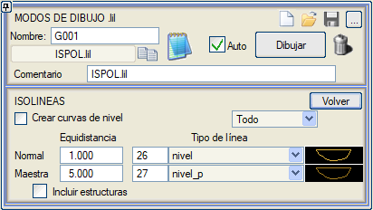Bu menü aracılığıyla, dolgu konilerindeki eşyükselti eğrileri de dahil olmak üzere, bitmiş işin yüzeyindeki eşyükselti eğrilerini çizebiliriz. [ ] Üstyapısız seçeneği, platform yüzeyini (yüzey 67) veya bordürleri kullanmadan eşyükselti eğrilerini çizer. Yani, eşyükselti eğrilerini terasmandan (yüzey 68) geçirerek oluşturur. [ ] Sanat Yapıları seçeneği, sanat yapısı bölgelerinde de eşyükselti eğrilerini çizer. Traversler ve Raylar Travers oluşturma seçeneği, sembollere göre çizgiler alt menüsünden (programın 2020'den önceki eski sürümlerinde yapıldığı gibi) kaldırılmıştır. Artık, hem normal bir hatta hem de bir makasta olmalarına bağlı olarak hem raylar hem de traversler için farklı çizgi tipleri seçilebilen bir RAYLAR VE TRAVERSLER alt menümüz var. Burada oluşturulan raylar ve traversler, BIM modelinde oluşturulanlarla aynı geometriye sahiptir, yani Platform->Hat ve Travers ve Ray diyalog kutusunda tanımlanan parametreleri takip eder, istenirse kaynakları da oluşturur ve traversleri onlardan ayırır. Makasların topuğundan sonra gelen ve konumu makasla (.apv dosyası) tanımlanan traversler, makas traversleri için tanımlanan çizgi tipiyle çizilir. 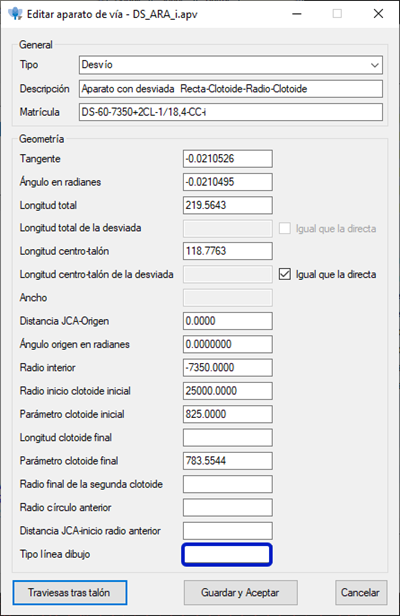
Enine Çizgiler Bu menü aracılığıyla, çeşitli kaynaklardan gelen enine çizgileri çizebiliriz: Her birinin KM'sini etiketleme imkanıyla, enkesitlerden gelen çizgileri çizebiliriz. Bir yüzey ve bir başlangıç ve bitiş kod çifti tanımıyla belirlenen çizgileri çizebiliriz. e sütunundaki kutucuğu işaretleyerek, bu segmentlerin her birinin enine eğimini de etiketleyebiliriz. Min.Eğim ve Maks.Eğim kutucuklarını kullanarak, etiketleme yapmak için iki minimum ve maksimum eğim değeri belirtebiliriz. Bu şekilde, örneğin, eğim aralığına göre farklı renklerdeki semboller kullanarak aynı veri satırını tekrarlayabiliriz. Son olarak, bir yüzeyin tüm enine çizgilerini, burada yüzeyi ve planda temsil edileceği çizgi tipini belirleyerek çizebiliriz. Boru kutucuğunu etkinleştirirsek, bu çizgileri sadece boru ayırma profillerinde çizmesini sağlayabiliriz. 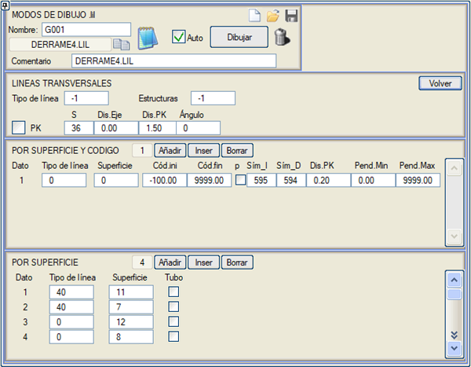
Şev Alanları Bu menüden Yarma ve Dolgu şevlerinin alanlarını çizebiliriz. Örnek olarak kütüphanemizde LC.lil ve Rec.lil gibi çizim modları bulunmaktadır.
Sınırlar Bu menü aracılığıyla, projemizin işgal ve kamulaştırma sınırlarını bir çizgi tipiyle işaretleyebiliriz. Dolgu Kaplamasını Takip Et kutucuğu etkinleştirilmişse, sınır çizgisi dolgu dış kaplama yüzeyini de kullanır. Sınırın dış kaplamayı dikkate alması için, Boyuna Çizgiler'de eşdeğer kutucuğuyla birlikte bir veri tanımlanmış olmalıdır.
Meksika etiketleme stili için bazı durumlarda, bu alt menü aracılığıyla yapabileceğimiz bir kademelendirme gerekir: Belirli bir değerin katları olan profiller analiz edilir, varsayılan olarak 50m. Ardışık iki profilde, geleneksel kamulaştırma sınırı (örneğin, dolgu eteği veya yarma başı artı 1m) analiz edilir ve ikisinin en büyük değeri alınır. Bu değer, belirli bir değere (1m) yukarı yuvarlanabilir. Bu değer her iki profile de uygulanır ve bir segmentle birleştirilir.
Rögarlar, Borular ve Dirsekler
Bu tür projeler için özel çizim olanaklarını numaralandırmadan önce, köşeli noktalara sahip eksenler için, boyuna, enine çizgiler vb. plan çizim rutinlerinin şu işlemi gerçekleştirdiğini belirtmek gerekir: Eğer köşeli noktada bir profil varsa, bu profil giriş ve çıkış azimutu arasındaki açıortaya kadar döndürülürken, eksene olan mesafeler döndürülen açının kosinüsünün tersine eşit bir katsayı ile çarpılır. Bu, çizimlerin daha yumuşak ve daha iyi tanımlanmış olmasını sağlar. Çizim (rögarlar) kutucuğunu etkinleştirerek, atanan çizgi tipiyle her bir rögarın çapıyla 3D çizimini planda görebiliriz. Eğer Rögarlar (Kırmızı Kot) menüsünde herhangi bir çap tanımlanmamışsa, bu menüde tanımlanan Üst çap ve Alt çap okunur. Ayrıca menholler için farklı bir çizgi tipi belirlemek de mümkündür. Rögarları çizerken: .lil'i düzenle, Rögarlar, Çiz: Her eksen için iki dosya oluşturulur:
Ayrıca, aşağıdaki ek açıklamaları sürükleyecek bir hücre (örn. C47) tanımlama imkanımız da vardır:
ZN
RÖGARLARIN plandaki adları
ZP Rögarın ağız ve tabanının 3D çizimi ZT Boruların 3D çizimi ZD Rögarın tanımı ZM Borunun malzemesi ve çapı ZS Borunun tanımı tuberias.lil dosyası bu komutların kullanımına iyi bir örnektir: 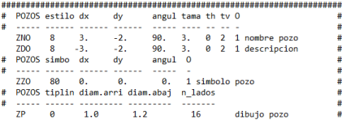
ZC komutu, hem planda hem de boykesitteki köşe noktalarından kaynaklanan dirseklerin gerçek açısını altmışlık derece cinsinden etiketlemeye olanak tanır. Açı 3D olarak hesaplanır. Bu aynı komutlara 'O' karakteri eklenerek (ZNO, ZDO, ZZO,…) açının mutlak mı yoksa eksene göreceli mi olduğu seçeneği sunulur (O sütununa 0 veya 1 yerleştirerek). tuberias3.lil dosyası, örneğin, bu komutları kullanır: 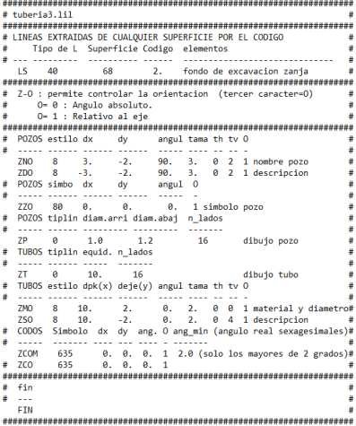
ZCOM komutuyla ayrıca, açıları bu değerden küçük olan dirsekleri etiketlememek için bir minimum açı belirlenebilir. tuberias3.lil dosyası da bu imkanı içerir. Hem ZCO hem de ZCOM komutu için, etiketleme için kullanılacak sembol tipi belirtilmelidir (varsayılan olarak S635). 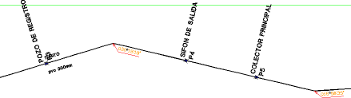
tuberias4.lil durumunda, etiketleme hücrelerle (varsayılan olarak C20 tipi) yapılır ve o zaman yeni komutlar ortaya çıkar: 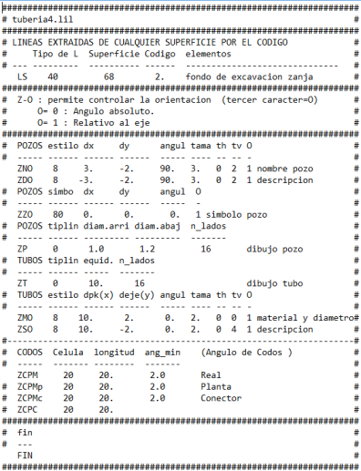
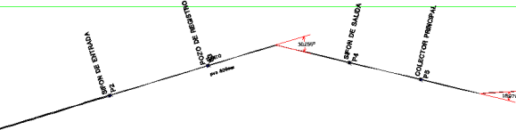
ZZOB ve ZZOS komutları, tuberias4p.lil çizim modunda kullanılır ve sırasıyla rögarın ağız ve taban kotlarını etiketlemeye olanak tanır. tuberias4i.lil modu, çift boru bölgelerinde iki rögar sembolü (ZZO2 komutu) çizmeyi ve/veya her boru için birer tane olmak üzere iki rögarı (ZP_2 komutu) çizmeyi sağlayan komutlar kullanır. Ayrıca sol boruyu (ZT_I komutu) ve sol borunun malzemesini ve çapını (ZMOI komutu) da boyar. 2D Uzunluk ve (gerçek) Uzunluk kutucukları aracılığıyla, rögarlar arasındaki boru uzunluğunu orta noktalarında etiketleyebiliriz. Yükseklik kutucuğuyla toplam yüksekliği etiketleriz: (Zağız - Ztaban) + Radye kalınlığı. Borular sekmesinde: Borunun malzemesini, tanımını ve tipini farklı konumlarda etiketleme imkanı. Her boru için tanımlanan özel çizgi tipinin, sadece boru ekseninin çizimi için kullanılması ve .lil düzenlemesinde tanımlanan tipin genişlikler için uygulanması imkanı. Dirsekler sekmesi içinde program şunları etiketlemeye olanak tanır: 3D Açı, KM, Kot, Sembol ve plan, boykesit ve plan-boykesit dirseklerini ayırt ederek numara. Metin Tabloları Ayrıca kütüphanede, bir metin tablosunda toplanan bilgileri plan üzerine etiketleyen TABLATEX.lil dosyası da bulunur. Böylece, örneğin, tablo [Tip Kesitler] seçeneğiyle yüklenmişse, hesap bölümlerinin KM'leri, her bölümde uygulanan tip kesitlerin adları ve her bölümün uzunluğu etiketlenir (ETT_N, ETT_PK, ETT_L ve ETT_T komutları). Nokta tablolarını etiketleme imkanı. Çizim, nokta tabloları diyalog kutusunun Dök komutuna benzer, ancak burada şunlara sahibiz: Sembol için:
5 nokta tablosunun her biri için bağımsız bir etiketleme tanımlanabilir. Metnin Yatay Hizalaması: Tipik sağa, merkeze veya sola hizalamaların yanı sıra, Eksen Tarafı hizalamasına sahibiz: Bu durumda, eksenin sağındaki noktaların metinleri sağ taraflarından ve solundakiler sol taraflarından hizalanır. Bu durumda ayrıca, nokta eksenin solundaysa, dX değerinin işareti değiştirilir. ###################################################################### # TABLATEX: Metin Tablosu # ###################################################################### # TABLATEX.lil # ###################################################################### # KODLARA GÖRE L ÇİZGİLERİNİN ETİKETLEME TANIMI # # L tipi koda kadar elemanlar # # --- --------- ---------------- ------------------------------ # T 39 -50. refüj tabanı # T 81 -10. refüj palyeleri ve yardımcıları # T 31 10. ana platformlar # T 81 110. dış palyeler ve banketler # T 82 1000. dolgu # T 39 1200. hendek # T 43 2000. yarma # T 69 3000. zayıf zemin yarması # T 39 3012. Kenar Hendeği # T 43 3100. Kenar Hendek Yarması # ###################################################################### # TARAMALAR İÇİN ETİKETLEME TANIMI # # L tipi yarma L tipi dolgu # # --- --------------- ---------------- # PT 43 40 # # L tipi mes(mm) iptal 1 uzun, her n'de # # --- --------- -------- ------- ------------------------------ # P5 0 1. 1. 2 (Palyeden kod==50) # ###################################################################### # DOLGU KONİSİ VE TÜNEL PORTALLARI TANIMI # # N,N5 ve N11'i taramalar gibi kabul eder. # # YarmaŞev DolguŞev MaksKonAçı MaksÖnMesafe KenarTipi TaramaTipi # # --- -------- -------- ---------- ------------ --------- --------- # NT5 0.50 1.00 2.00 0.50 82 -1 (PT kullanır)# ###################################################################### # METİN TABLOLARININ ETİKETLENMESİ # #--------------------------------------------------------------------# # Stl/Smb KM_Mes Eks_Mes Açı Boyut YaH YaD # # ------ ------- -------- -------- ------ ------ --- --- # ETT_N 7 4.0 25.0 0.0 2.0 0 2 İSİM # ETT_PK 383 0.0 0.0 0.0 BAŞLANGIÇ KM'Sİ # ETT_L 553 8.0 35.0 0.0 UZUNLUK # ETT_T 1 TABLO 1 # ###################################################################### # son # # --- # SON # ###################################################################### Sembollere Göre Çizgiler Kütüphanede, iç ve dış korkulukları çizmeye olanak tanıyan biondas.lil çizim modu bulunur. Sağ platform için iç korkuluk sağa kurplarda ve sol platformda sola kurplarda yerleştirilir. Carriles_Y_Traviesas.lil plan çizim modu, profilden bir sembol (raylar) çıkarmaya ve bunlarla eksen boyunca bir 3B çizgi oluşturmaya olanak tanıyan S komutunu içerir. Eğer bir profilde aranan sembol görünmezse, program çizgiyi keser. Bu çizim modundan yola çıkarak, deveri, eğimi, yüksekliği, genişliği ve traversin uzunluğunu ve aralarındaki mesafeyi dikkate alarak traversleri üç boyutlu olarak çizmek mümkündür.  CentroTun.lil çizim modu da önceki komutu kullanır, bu da tünellerin merkezlerini bir 3B çizgi olarak göstermeye olanak tanır. Hem karayolları hem de demiryolları için uygulanabilir. Bu çizgiden, eksen üzerine yansıtarak, bir .top/.toc oluşturarak vb. bilgi çıkarılabilir.  Profilin bir sembolünü onu oluşturan çizgilere ayırmaya ve homolog köşeleri hem enine (ST komutu) hem de boyuna (SLT komutu) birleştirmeye olanak tanıyan daha gelişmiş komutlar bulunur. Böylece, örneğin, CARRILES_LT.lil dosyası, traversleri (onları tanımlayan köşelerin enine birleşimi) ve rayları (onları oluşturan köşelerin boyuna birleşimi) çizer: Kritik nokta (gabari çalışmaları): SS komutu, bir sembolün içindeki ilişkili bir sembolün konumunu çıkarmaya ve daha sonra gabari çalışmasında kullanılmak üzere bir 3B çizgi ve bir .pmt dosyası oluşturmaya olanak tanır. Birkaç SS komutu eklendiğinde, noktaları aynı .pmt dosyasına (pmt=2) ekleme imkanı oluşturulur; burada her nokta, sembol tipiyle numaralandırılır. Eğer bir profilde aranan sembol görünmezse, program çizgiyi keser: Sembollere Göre Semboller SP komutu, profilden semboller çıkarmaya ve bunları EDM sembolleri olarak çizmeye olanak tanır. Bir kullanım örneği simbolos.lil dosyasıdır: Yüzey ve Koda Göre Alanlar Areas.lil dosyası, belirli yüzeylerden çıkarılan referans kodlarıyla sınırlı kapalı alanlar çizmeyi sağlayan ve tünel, sanat yapısı ve yarı sanat yapısı bölgelerini dolu çizgilerle çizmeyi sağlayan komutlar içerir. Ayrıca dolgu konilerinin alanlarının bölgelerini çizmek için de komutlar içerir. Konilerin tanım komutu, her viyadük ve her tünel için SANAT YAPILARI menüsünde tanımlanan ön cephe şevlerini kullanabilir: Kütüphanede ayrıca, alanları 8D çizgiler kullanarak çizen AREAS8D.lil dosyası da bulunur. Dolgu Konileri Kütüphanede, sanat yapılarının kenar ayaklarındaki dolgu konilerini çizen bir komut (N5) içeren derrames.lil, derrame2.lil, derrame3.lil ve derrame4.lil dosyaları bulunur. Ayrıca, dik olmayan kenar ayaklı sanat yapılarında, yani bir dizideki dolgu konilerini de çizer: TaludDes ve TaludTer değerleri, programın dolgu konilerinde uygulayacağı sırasıyla yarma ve dolgu şevlerini tanımlamaya olanak tanır. Bu değerler, SANAT YAPILARI menüsünde başka değerler tanımlanmadığı sürece her zaman kullanılacaktır, çünkü ikincisi önceliklidir.
Eğer kenar için çizgi tipi = -2 koyarsak, o zaman dolgudaki koniler için dolgu eteğinin (kod 601) boyuna çizgileriyle aynı tipi ve yarmadaki koniler için yarma başınınkini (kod 1399) kullanacaktır. Kazıma (Frezaj) ve Söküm
|
||||||||||||||||||||||||||||||||||||||||||||||||||||||||||||||||
| Bordürler, Tabliyeler Bordürlerin, tabliyelerin ve kirişlerin boyuna ve/veya enine çizgilerini temsil eder. Bordürlerin bağlantı noktalarının boyuna çizgileri de, her bordürde tanımlanan çizgi tipi kullanılarak temsil edilebilir. Üçgenler çizim modu etkinleştirilebilir; bu mod, BIM modelinin üçgenlerinin tel modelini oluşturur, bu da KML'ye (Google Earth) mutlak kotta (zemine yapışık değil) aktarıldığında tabliyeleri, kirişleri, kazık perdelerini ve temel kazıklarını katı bir cisim olarak görmeyi sağlar. Üstyapı Katmanları Bu seçenekle, üstyapı katmanlarının her biri için boyuna çizgileri, enine çizgileri ve kaplanan alanı çizebiliriz; bunu yaparken katmanın sadece görünen yüzünü dikkate alırız. |
||||||||||||||||||||||||||||||||||||||||||||||||||||||||||||||||
| Eğim
Değişimleri KM'yi, kotu ve önceki ve sonraki eğim değişim noktasıyla olan mesafeleri ve eğimleri etiketlemek için sembollerin ilişkilendirildiği bir hücre tanımlamaya olanak tanır. Eğim için bir tolerans değeri (dEmin) belirlenir. Etiketlenecek kesit noktalarının bir listesi tanımlanabilir, örneğin: hendek tabanı (yüzey 68 kod 600), kenar hendeği (yüzey 68, kod 3010), vb... Hücrenin konumu daha sonra düzenlenebilir ve bu hücre tüm sembollerini beraberinde sürükler. |
||||||||||||||||||||||||||||||||||||||||||||||||||||||||||||||||